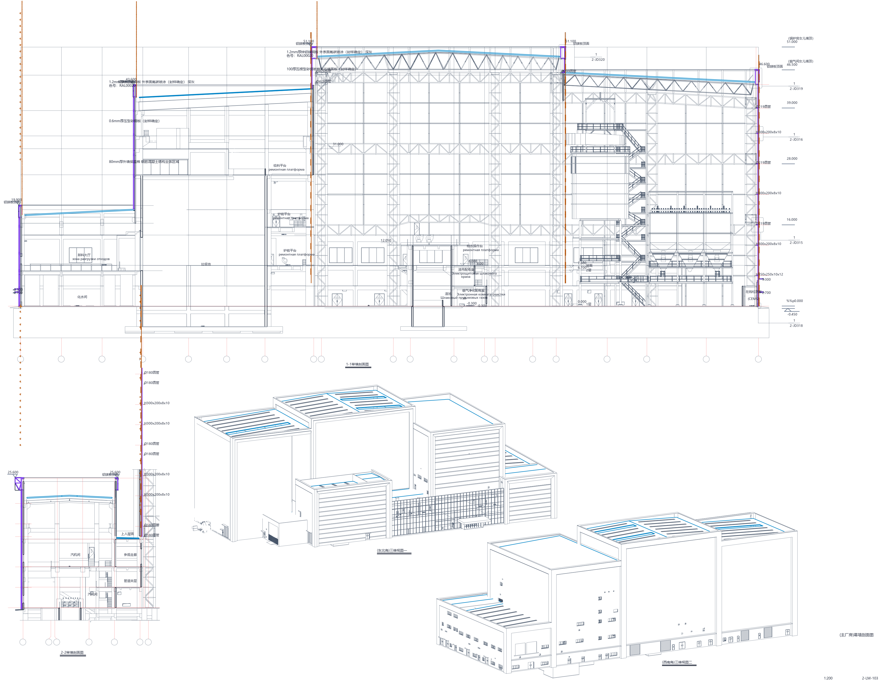

BLENDER 5.0 × THREE.JS BIM ENGINE
军信环保 · 伊塞克湖州垃圾科技处置(东岸)项目
正在加载主厂房幕墙、多色RAL建筑表皮与全厂区室外景观三维模型 (2026-10-23改最终版)...
初始化 WebGL 物理渲染管线...
KYRGYZSTAN · ISSYK-KUL KARAKOL · 1650m ASL
伊塞克湖(东岸)项目 · 主厂房幕墙与景观三维交互系统
依据 2026-10-23改【最终版】外装全套CAD(99张) & 2026-10-26 景观总图 1:1 建模
8,292.5
㎡
占地面积
17,912.4
㎡
总建筑面积
51.45
m
主厂房总高
9度
0.344g
抗震设防
354
株
CAD实测乔灌木
🚶 漫游模式
📏 激光测距
🏷️ 双语地标
🎬 汇报漫游视频
📐 CAD原图对照
🎛️ 导览与图层
📋 构件详情
CAD DWG 矢量原图直出
2-LM-103 幕墙剖面及东北/西南三维视图
＋ 放大
－ 缩小
1:1 复位
✕ 关闭对照窗

1080P H.264 汇报漫游成片
军信环保·伊塞克湖(东岸)项目 主厂房幕墙与室外景观三维汇报漫游 (27s · 6大章节)
⬇️ 下载 MP4 视频
✕ 关闭